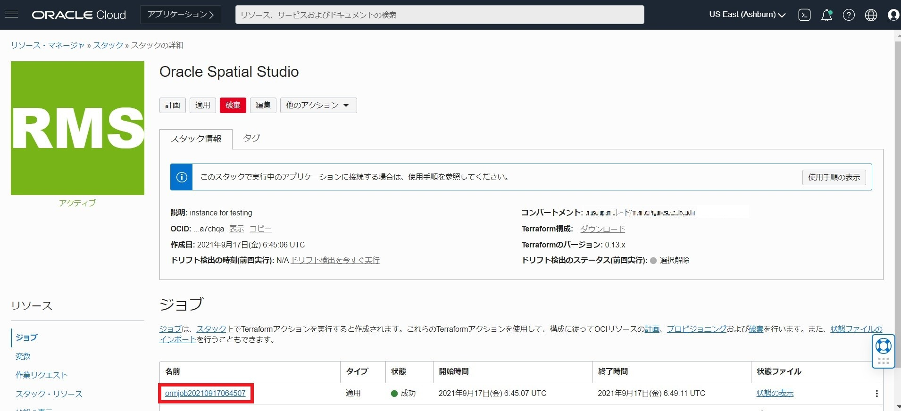
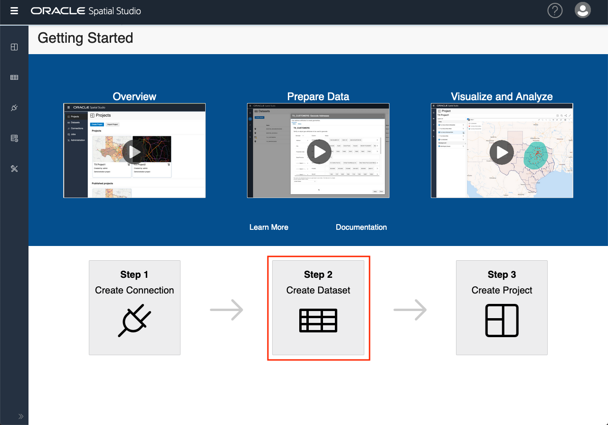

はじめに
Oracle Spatial Studio (Spatial Studioとも呼ばれます)は、Oracle Database のSpatial機能によって保存および管理されている地理空間データに対して接続、視覚化、調査および分析を行うためのフリー・ツールです。Spatial Studioは従来、Spatial and Graphとして有償オプションでしたが、現在はOracle Databaseの標準機能として追加費用なくご利用いただけます。 本記事では Spatial機能を用いた地理空間データの活用の方法をご紹介します。
目次 :
- 1. Oracle Spatial Studioのクラウド上での構築
- 2. 地理空間データを含むCSV形式ファイルのデータベースへのロード
- 3. 政府統計データのダウンロードとロード
- 4. Spatial Studioを用いた分析
- おわりに
前提条件
- ADBインスタンスが構成済みであること
※ADBインタンスの作成方法については、 101:ADBインスタンスを作成してみよう を参照ください。
所要時間 : 約80分
1. Oracle Spatial Studioのクラウド上での構築
まず、Spatial Studioのメタデータを格納するリポジトリとなるデータベース・スキーマを作成します。これは、データセット、分析、プロジェクトの定義など、Spatial Studioで行う作業を格納するスキーマです。
1-1. リポジトリ用にスキーマを作成する
-
OCIコンソールからDatabase ActionsでADMINユーザーとしてSpatial Studioリポジトリに使用するADBに接続します。
-
以下のコマンドでリポジトリ・スキーマを作成します。スキーマには任意の名前を付けることができます。ここではstudio_repoという名前で作成します。後の手順で使用するため、設定したパスワードをメモしておきます。
CREATE USER studio_repo IDENTIFIED BY <password>;
1-2. 表領域クオータを割り当てる
- デフォルトの表領域dataをstudio_repoに割り当てます。
ALTER USER studio_repo DEFAULT TABLESPACE data; - 表領域クォータをstudio_repoに割り当てます。今回は250Mで設定しますが、他のデータセットを試す場合は、無制限(UNLIMITED)に設定することもできます。
ALTER USER studio_repo QUOTA 250M ON data;
1-3. 権限の付与
作成したstudio_repoに権限を付与します。
GRANT CONNECT,
CREATE SESSION,
CREATE TABLE,
CREATE VIEW,
CREATE SEQUENCE,
CREATE PROCEDURE,
CREATE SYNONYM,
CREATE TYPE,
CREATE TRIGGER
TO studio_repo;
これで、studio_repoスキーマをSpatial Studioのリポジトリとして使用する準備が整いました。
1-4. ウォレットのダウンロード
Spatial Studioが、作成したADBリポジトリ用スキーマに接続するには、ウォレットが必要です。 104 : クレデンシャル・ウォレットを利用して接続してみよう を参考に、ウォレットをダウンロードします。
1-5. マーケットプレイスからSpatial Studioを選択する
-
左上のハンバーガーメニューをクリックして、[マーケットプレイス]を選択します。

-
『Spatial Studio』と検索し、Oracle Spatial Studio をクリックします。
-
利用規約に同意して、[スタックの起動]をクリックします。

1-6. スタックウィザードの作成
-
スタックに任意の名前と説明を追加し、コンパートメントを選択します。

-
可用性ドメインとインスタンスのシェイプを選択します。Compute Shapeの詳細はこちら です。
- HTTPSポートとSpatial Studio Adminのユーザー名をデフォルトから変更することができます。Spatial Studio Adminの認証には、OCI Vault またはパスワードを使用できます。下の画像は、パスワードを使った例です。なお、本番環境では、OCI Vault を使用することをお勧めします。
設定ができたらスクロールダウンして、「ネットワークの設定」のセクションに進みます。

（補足） デフォルトでは、Spatial Studio の 管理ユーザー名は admin です。これはSpatial Studioのアプリケーション・ユーザーであり、『1. Spatial Studioリポジトリのデータベースユーザー作成』で作成したリポジトリ・スキーマ用のデータベース・ユーザー名（studio_repo）とは異なります。
-
ネットワークについては、新しいVCNを自動的に作成する、もしくは既存のVCNを作成します。
下の図は、新たにVCNの作成した例です。既存のVCNを使用するには、上記ステップ2で選択したのと同じ可用性ドメイン内にある必要があります。他に既存のVCNがない場合は、残りの項目はデフォルトのままで構いません。既存のVCNがある場合は、競合を避けるためにCIDR値を変更してください。 -
ssh公開鍵をロードします。
- 入力した内容を確認します。修正が必要な場合は、[前]をクリックします。問題ない場合は、[作成]をクリックします。
1-7. 初回ログイン
-
作成したスタックの情報を確認します。ハンバーガーメニューから[開発者サービス]→[スタック]を選択します。
-
以下のようにOracle Spatial Studioというスタックが作成されています。合わせてジョブが作成されるので、ジョブの名前をクリックします。 
-
正しく作成されていれば、以下のようにログが表示されます。
-
ログセクションの一番下までスクロールダウンします。完了すると、「Apply Complete！」と表示され、続いてインスタンスの詳細が表示されます。最後に表示されているのは、Spatial StudioのパブリックURLです。このURLをコピーして、ブラウザに貼り付けます。

-
Spatial Studioの公開URLを初めて開くと、プライバシーとセキュリティに関するブラウザの警告が表示されます。具体的な警告内容は、お使いのプラットフォームやブラウザによって異なります。
これはSpatial Studioの問題ではなく、署名付きのHTTPS証明書を持たないWebサイトへのアクセスに共通するものです。署名された証明書をロードして構成すると、この警告は解除されます。
リンクをクリックすると、ウェブサイトに移動します。 -
Spatial Studio の 管理ユーザー名（デフォルトはadmin）と、『1-6.スタックウィザードの作成』で入力したパスワードを入力します。そして、[Sign In]をクリックします。

-
Spatial Studioインスタンスへの最初のログイン時に、メタデータ・リポジトリとして使用するデータベース・スキーマの接続情報の入力が求められます。『1-1. リポジトリ用にスキーマを作成する』で作成したスキーマを使用するので、[Oracle Autonomous Database]を選択し、[Next]をクリックします。
-
『1-4. ウォレットのダウンロード』で保存したウォレットファイルを選択（またはドラッグ＆ドロップ）します。読み込み後、[OK]をクリックします。

- 『1-1. リポジトリ用にスキーマを作成する』で作成したユーザー名（studio_repo）とパスワード、およびサービスを入力します。今回は、サービスレベルはmediumに設定しておきます。接続サービスについては、こちらもご参照ください。以下の画像のように入力し、[OK]をクリックします。

- Spatial Studioがスキーマへの初期接続を行い、いくつかのメタデータ・テーブルを作成します。完了すると、Getting Started情報とともにSpatial Studioが開きます。以下の画像のように表示されれば、ログイン成功です。

2. 地理空間データを含むCSV形式ファイルのデータベースへのロード
2-1. 駅の場所データのダウンロード
日本の全駅データをこちらからダウンロードします。なお、会員登録（無料）が必要です。
以下の画像のように、最新の駅データのcsvファイルをダウンロードします。
2-2. 駅データのロード
-
Getting Started画面の[Create Dataset]をクリックします。 
-
[Import File]をクリックし、先ほどダウンロードした駅データのcsvファイルをインポートします。

-
駅データのデータセットが作成されます。Table Name と Dataset nameをSTATION に変更し、Upload to connection:をSPATIAL_STUDIOに設定します。また、station_cdとstation_g_cdのデータ型がDATEになっているので、NUMERICに変更してSubmitします。

-
データセットが作成されましたが、アイコンに注意表示が出ているので修正します。

-
[Go To Dataset Columns]をクリックし、主キー列を設定します。
 以下のようにSTATION_CD列のトグルスイッチ『Use As Key』をONにし、[Validate key]をクリックします。
主キーを有効化したら、[Apply]をクリックします。
以下のようにSTATION_CD列のトグルスイッチ『Use As Key』をONにし、[Validate key]をクリックします。
主キーを有効化したら、[Apply]をクリックします。 -
[Create Latitude/Longitude Index]をクリックし、住所を地図表示用の座標位置に変換します。 元々LAT列とLON列が入力されているので、そのまま[OK]をクリックします。
 上記を正しく設定できたら、左のアイコンがピンマークに変わります。
上記を正しく設定できたら、左のアイコンがピンマークに変わります。

2-3. プロジェクトの作成
データセットの作成が終わったら、駅データを地図に反映させてみます。
データセットの右のLaunch Menuから[Create Project]をクリックします。

データセットをドラッグして、任意の場所にドロップします。

日本の全駅データが地図上に表示されました。

3. 政府統計データのダウンロードとロード
続いて東京都の境界データと国勢調査の年齢階層データ、先ほどロードした全国の駅データを使って、Spatial Studioで分析をしてみましょう。
3-1. 境界データ/小地域（東京都）のダウンロード
こちら から東京都の境界データのShapefileをダウンロードします。
利用規約を読んでzipファイルを展開します。
（補足） Shapefile（シェープファイル）とは、Esri社が提唱する、GISデータのフォーマットの1つです。
https://www.esrij.com/gis-guide/esri-dataformat/shapefile/
図形情報と属性情報を持った地図データファイルが集まったファイルで、例えばこの後使う「市区町村の形状データ」では、市町村の形を示す情報や、その市町村の名前などが格納されています。*.shp, *.dbf など、決まった拡張子を持つ複数のファイルからなります。
以下の4つのファイルが展開されます。
- h27ka13.dbf
- h27ka13.prj
- h27ka13.shp
- h27ka13.shx
3-2. 国勢調査の年齢階層データのダウンロード
こちら から東京都の年齢階層データ（age_group_tokyo.csv）をダウンロードします。合わせてテーブル定義書も確認します。
※ 政府統計の総合窓口(e-Stat)『平成２７年国勢調査 人口等基本集計 年齢（５歳階級）、男女別人口、総年齢及び平均年齢（外国人－特掲）－町丁・字等』のデータを一部加工して作成しています。
3-3. 各データのSpatial Studioへのロード
先ほどダウンロードしたシェープファイルと年齢階層データをSpatial Studioへロードし、データセットを作成します。
-
Spatial Studioへログインし、[Create Dataset]→[Import File]をクリックし、4つのファイルを全てインポートします。
- 以下の画像のように設定し、Submitします。
- Upload to connection：SPATIAL_STUDIOを選択
- Table name：TOKYO_BOUNDARYに変更
- Dataset name：TOKYO_BOUNDARYに変更
- Create Spatial Index：ON（デフォルト）に設定、空間索引が作成されます。
-
『2-2. 駅データのロード』と同じ要領で、AREA列を主キー列に設定します。

- age_group_tokyo.csvをインポートします。Issuesが2つありますが、ここはこのままで先に進みます。

3-4. Database Actionsで2つの表をjoinする
Spatial StudioでロードしたTOKYO_BOUNDARY表とAGE_GROUP_TOKYO表を、共通のKEY_CODE列でjoinします。 現在の設定では、studio_repoユーザーでDatabase Actionsにサインインできないため、ADMINユーザーでRESTの有効化をする必要があります。
-
ADMINユーザーでDatabase Actionsにサインインします。
-
[データベース・ユーザー]をクリックします。

-
studio_repoユーザーにRESTの有効化をします。

-
一度サインアウトし、studio_repoユーザーでサインインし直します。
-
『開発』の[SQL]をクリックします。
-
Spatial Studioでロードした3つの表AGE_GROUP_TOKYO、STATION、TOKYO_BOUNDARYがあることを確認します。
- 以下のコマンドでAGE_GROUP_TOKYO表とTOKYO_BOUNDARY表をjoinし、geo_age_tokyo表を作成します。
create table geo_age_tokyo as select a.PREF, a.CITY, a.S_AREA, a.PREF_NAME, a.CITY_NAME, a.S_NAME, a.KIGO_E, a.HCODE, a.AREA, a.PERIMETER, a.H27KAXX_, a.H27KAXX_ID, a.KEN, a.KEN_NAME, a.SITYO_NAME, a.GST_NAME, a.CSS_NAME, a.KIHON1, a.DUMMY1, a.KIHON2, a.KEYCODE1, a.KEYCODE2, a.AREA_MAX_F, a.KIGO_D, a.N_KEN, a.N_CITY, a.KIGO_I, a.MOJI, a.KBSUM, a.JINKO, a.SETAI, a.X_CODE, a.Y_CODE, a.KCODE1, a.GEOM, b.* from TOKYO_BOUNDARY a, AGE_GROUP_TOKYO b where a.key_code = b.key_code; -
再度Spatial Studioに戻り、作成したgeo_age_tokyo表でデータセットを作成します。[Create Dataset]→[Table/view]からGEO_AGE_TOKYOを選択します。また、[Validate geometries]のトグルスイッチをONにします。
- 主キー列をAREA列に設定し、[Create Spatial Metadata and Index]をクリックします。

設定が成功するとGEO_AGE_TOKYOのアイコンがピンマークに変わります。
4. Spatial Studioを用いた分析
作成したgeo_age_tokyo表と駅データを用いて、駅周辺の特定の年齢層の人口を集計してみます。 以下は、東京都を駅周辺の650個の小地域に分け、駅ごとに0~14歳、15~64歳、65歳以上の人口を表示するSQL文です。 このSQL文をDatabase Actionsで実行します。
select sum(a.T000849017), sum(a.T000849018), sum(a.T000849019), b.station_name
from geo_age_tokyo a, STATION b
where sdo_anyinteract (a.geom, sdo_geometry(2001, 8307, sdo_point_type(b.lon, b.lat, NULL), NULL, NULL)) = 'TRUE'
group by b.station_name;
- sdo_anyinteract：表内のジオメトリに、特定のジオメトリとの位相関係があるかどうかを確認する、つまり東京都の小地域の空間データと駅の座標位置になんらかの位相関係があればTRUEを返します。
- sdo_geometry：Oracleのデータベース上に点やポリゴンを収容するオブジェクト型です。引数の2001は二次元の点を表し、8307はWGS84経度/緯度座標系に関連付けられています。詳しくはこちら をご参照ください。
- sdo_point_type：点ジオメトリの座標を格納するオブジェクト型です。
10秒ほど待つと、以下のような結果が返されます。東京都の各駅周辺の地域の年齢階層別の人口が表示されています。

続いて以下のSQLで15歳未満・15~64歳・65歳以上の人口の総計と65歳以上の人口の割合を駅ごとに表示してみます。 駅データと人口データの集計の仕方が若干異なっており、rate_over_64列の計算で0除算が発生してしまうため、回避のための条件を追加しています。
select
sum(a.T000849017) AS num_under_15,
sum(a.T000849018) AS num_15_to_64,
sum(a.T000849019) AS num_over_64,
sum(a.T000849019) / NULLIF((sum(a.T000849017) + sum(a.T000849018) + sum(a.T000849019)) ,0) AS rate_over_64,
b.station_name
from geo_age_tokyo a, STATION b
where sdo_anyinteract (a.geom, sdo_geometry(2001, 8307, sdo_point_type(b.lon, b.lat, NULL), NULL, NULL)) = 'TRUE'
group by b.station_name having sum(a.T000849019) / NULLIF((sum(a.T000849017) + sum(a.T000849018) + sum(a.T000849019)) ,0) is not null
ORDER BY rate_over_64 DESC;
実行すると以下のような結果が返されます。

最後にこのデータを地図上で図示してみたいと思います。 上記のSQL文にcreate table…asを追加したtmp表を作成し、tmp表と駅データの表を駅名でjoinしてage_over_64_tokyo表を作成します。
create table tmp
as select
sum(a.T000849017) AS num_under_15,
sum(a.T000849018) AS num_15_to_64,
sum(a.T000849019) AS num_over_64,
sum(a.T000849019) / NULLIF((sum(a.T000849017) + sum(a.T000849018) + sum(a.T000849019)) ,0) AS rate_over_64,
b.station_name
from geo_age_tokyo a, STATION b
where sdo_anyinteract (a.geom, sdo_geometry(2001, 8307, sdo_point_type(b.lon, b.lat, NULL), NULL, NULL)) = 'TRUE'
group by b.station_name having sum(a.T000849019) / NULLIF((sum(a.T000849017) + sum(a.T000849018) + sum(a.T000849019)) ,0) is not null
ORDER BY rate_over_64;
create table age_over_64_tokyo as
select a.rate_over_64, b.*
from tmp a, STATION b
where a.station_name=b.station_name;
Spatial Studio上でage_over_64_tokyo表のデータセットを作成し、プロジェクトを作成します。 データセットを地図上にドラッグアンドドロップすると、以下のようになります。

65歳以上の割合によって色を分けてみます。 Layers ListのAGE_OVER_64_TOKYOの右のボタンをクリックし、Settingsをクリックします。
Layerの設定画面になるので、BasicのColorをデフォルトのSingle ColorからBased on dataに変更します。
列を選択できるのでRATE_OVER_64列を選択し、基準となる値を0から0.6まで0.1刻みで設定します。 設定できたらSet paletteから色分けを再度選択し直すことで以下のような画面になります。

おわりに
Oracle Spatial Studioを使って、地理情報を含むデータの可視化やその空間分析ができることをご確認いただきました。
また、ここでは扱いませんでしたが、面積計算を織り込んだ分析や道路/経路面を考慮した対象商圏の分析などもOracle Spatial の機能を利用することで可能になっています。
さらにAutonomous Databaseで使用することで、大量のデータに対しても高速に処理を行うことができます。
Oracle Spatial StudioはAutonomous Databaseに標準で含まれておりますので、Autonomous Databaseを使用する際は合わせてご検討ください。
参考資料
- 『Oracle Autonomous Database Serverlessの使用』 Autonomous DatabaseでのOracle Spatialの使用
- Oracle Database 『開発者ガイド』 20 空間演算子
以上でこの章は終了です。次の章にお進みください。